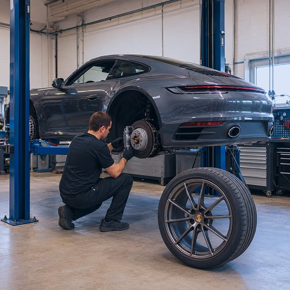
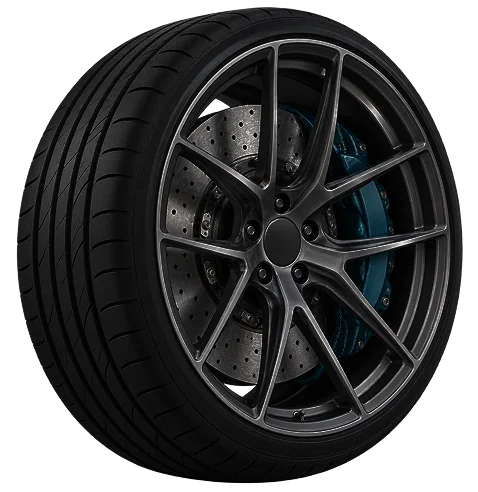
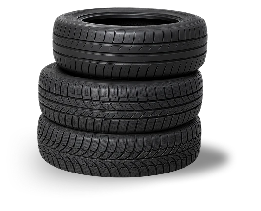
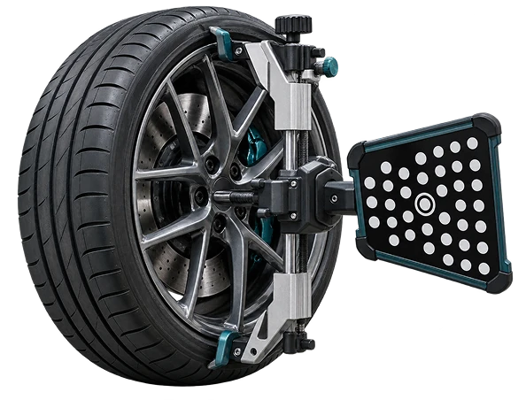

Tire & Wheel Service
Tire and Wheel Service in Acton, MA
Your tires are the only part of your vehicle that actually touches the road, so their condition shapes your traction, steering, braking, and fuel economy. At Acton Autowerks, we use state-of-the-art equipment to mount, balance, repair, and align tires on all cars and trucks, from daily commuters to the European and performance vehicles we specialize in.


Our Tire and Wheel Services
Tire mounting and balancing
Tire repair
Wheel alignment

Different driving needs call for different tires. Summer performance tires deliver grip in warm weather, all-seasons balance year-round versatility, and dedicated winter tires give you confidence through New England snow and ice. Whatever you drive, a proper mount and balance protects ride quality and helps your tires wear evenly.
Why an Alignment Matters
A wheel alignment keeps your steering true and can meaningfully extend the life of your tires. If you notice uneven tread wear, a steering wheel that sits off-center, or the car pulling to one side, it may be time to have your alignment checked. We’ll inspect it and let you know honestly whether it needs attention, with no upselling.

20+Years combined experience
Why New England Drivers Trust Us
With over 20 years of combined experience, our team has earned a reputation across MetroWest and New England for our expertise with European vehicles, straightforward advice and quality work. Whether you’re here for a set of tires today or ongoing maintenance and service down the road, we’ll treat your vehicle like our own.
Frequently Asked Questions
How often should I replace my tires?
It depends on the tire, your mileage, and your driving conditions, but worn tread, cracking, or vibration are common signs it’s time. Bring your car in and we’ll give you an honest assessment.
Do you service run-flat and European performance tires?
Yes. As European car specialists, we regularly mount and balance run-flats and performance tires for BMW, Mercedes-Benz, Audi, and other makes, using the proper equipment suited to those wheels.
How do I know if I need a wheel alignment?
Uneven tire wear, a crooked steering wheel, or the car drifting to one side on a straight road are the usual indicators. We can check your alignment and show you what we find.
Do you rotate tires as part of regular maintenance?
Yes, tire rotation is part of the routine maintenance and service intervals we recommend to help your tires wear evenly and last longer.